| |
Wonder Woman Day
 All right. So Six Flags Magic Mountain is one of the parks that wound up getting a new coaster for 2022 (Despite being one of the last parks in the industry to need a new major coaster). And.....new major coaster at my home park? I jump in it (Sorry this update is so damn late). But instead of just showing pictures from our first day riding it, we figured we'd lump in all our summer visits to the park. So yeah. Visit #1. Here's some construction photos of Wonder Woman: Flight of Courage.
All right. So Six Flags Magic Mountain is one of the parks that wound up getting a new coaster for 2022 (Despite being one of the last parks in the industry to need a new major coaster). And.....new major coaster at my home park? I jump in it (Sorry this update is so damn late). But instead of just showing pictures from our first day riding it, we figured we'd lump in all our summer visits to the park. So yeah. Visit #1. Here's some construction photos of Wonder Woman: Flight of Courage.
 Hey. We might as well ride this while we're here.
Hey. We might as well ride this while we're here.
 I know its easy to ignore this ride due to it being tucked away in the corner and overshadowed by so many better coasters. But this a really fun ride and probably would be the star attraction at so many parks in the United States.
I know its easy to ignore this ride due to it being tucked away in the corner and overshadowed by so many better coasters. But this a really fun ride and probably would be the star attraction at so many parks in the United States.
The offspring of Geoffry Sonic and Gertrude continue to live on
I see Jason is back here again.
 Meanwhile, we're back on Apocalypse/Terminator since that's finally opened back up.
Meanwhile, we're back on Apocalypse/Terminator since that's finally opened back up.
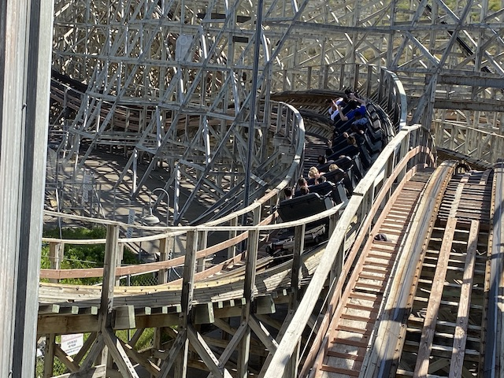
Happy to report that all the work they've done on it has paid off as its smooth and not jerking you around now. =)
While we were out riding rides, Jason won this stuffed little buddy for me. Aww. I'll call him Garbage Gary. He can get to know the back of my closet. =)
I know I'm not the biggest fan of this ride, but that loop genuinely has some of the best hangtime of any coaster.
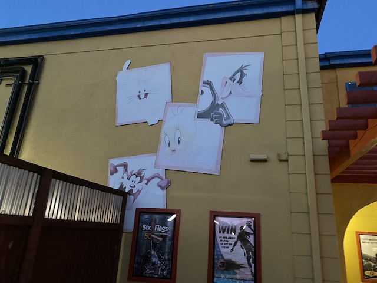
I know I genuinely complain about coasters needing to be repainted. But come on. That Loony Tunes painting DEFINATELY needs some work done on it.
 So I tried this burger place, Slaters 50/50, but only as someone bringing the burgers in as catering. I remember really liking them, so I thought....we should try them. This was far more expensive as I figured that this was just a sort of local fast food place. But no! This is a full blown sit down resteraunt. So I spent more than I was expecting. But that's OK. The food was great and I LOVED the beer samplers. Definately look foreward to eating here another time.
So I tried this burger place, Slaters 50/50, but only as someone bringing the burgers in as catering. I remember really liking them, so I thought....we should try them. This was far more expensive as I figured that this was just a sort of local fast food place. But no! This is a full blown sit down resteraunt. So I spent more than I was expecting. But that's OK. The food was great and I LOVED the beer samplers. Definately look foreward to eating here another time.
All right. Visit #2. And ugh. Looks like its gonna be a busy day.
So this was primarily a SFHH day for us. We went since....A: It had been a while since we last visited. B: 2022 was a big water park year for us (Future updates will showcase this).
We're gonna have a lot of fun here.
Come on our radio show and win a prize! What sort of prize! Who cares bro! A prize!
Ooh. I see Taboo Tower has gotten a new paintjob since I was last here.
 I know this tends to get overlooked thanks to Bonzai Pipelines, and there being a clone at Soak City. But it's still a lot of fun. 3 fun slides in one complex. =)
I know this tends to get overlooked thanks to Bonzai Pipelines, and there being a clone at Soak City. But it's still a lot of fun. 3 fun slides in one complex. =)
As far as water slides go, I think this might possibly be the best example of "Looks way better than it actually is".
Fun ride, but....we need more fat people to make it better! Damn people getting healthy and losing weight! =P
 Excuse me, but is Tiki Falls open? Bah! I'm sure its fine to go down now! ;)
Excuse me, but is Tiki Falls open? Bah! I'm sure its fine to go down now! ;)
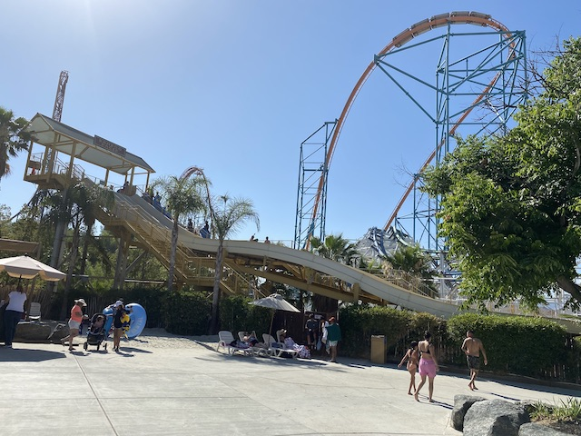
Goliath from Six Flags Hurricane Harbor.
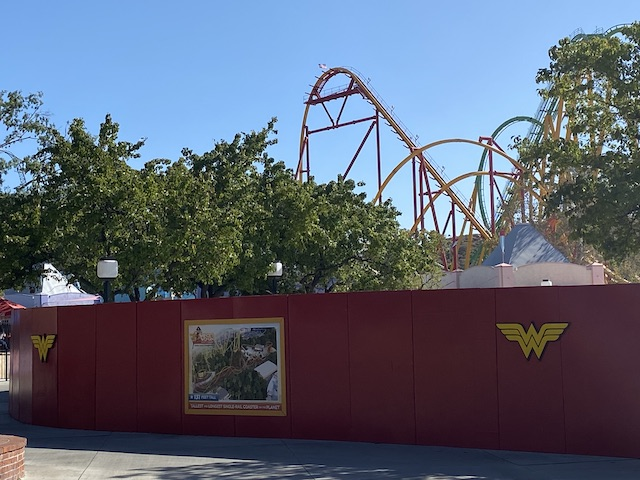
Soon, my pretty. I'll be riding you soon.
Yeah. We had our fun, but it's time to head into the park and ride some roller coasters. And....what better ride to hop onto after a bunch of fun water slides?
I know I'm sure this is overshadowed by all the crazy new RMCs being built. But as the original RMCs goes, this is one of my favorite of the I-Boxes. Love the split section and....the layout is just really good (No, I don't have home-park bias lol).
Hmm. Now here's a ride we haven't ridden in a while. Let's see how the Thomas Train is doing.
"No Mattel lawyer! That's not Percy! That's just a random Green Tain without a face! That was NEVER Percy! *nervous laugh* Please don't sue us!"
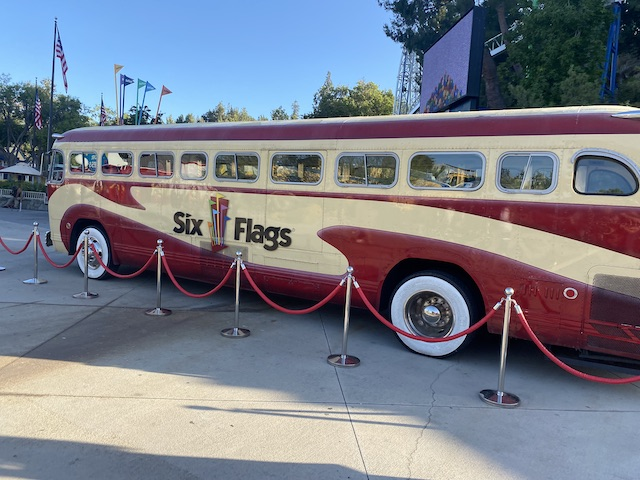
Good job. You got the bus back. Now just bring Mr. Six back. =)
GOD DAMN IT!!! X2'S CLOSED!!? GAH!!!
Has SFMM EVER had people perform there that I actually like? Honest question. I don't think so.
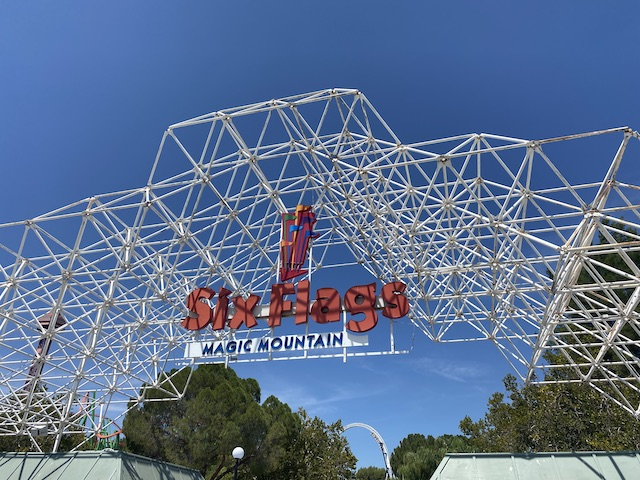
All right. Visit #3. There's only one reason why we're here today.
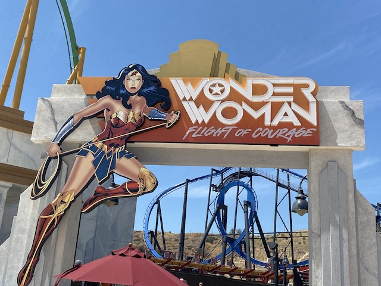
That's right! It's time for us to ride Wonder Woman: Flight of Courage! =)
This line surprisngly wasn't as bad as I was expecting. Granted, it's still 45 minutes I waited. Which....is NOT something I'd normally do. But....I'm more forgiving of lines like this when a ride just opened up, and I'm at a home park where I don't feel like I'm wasting time at a park I'm at for the first time or rarely visit if its a revisit.
Very happy that another coaster has added these pouches. Thanks for putting them on your newest coaster. 5 down, 15 to go. =)
 Now this actually isn't anything new since....I rode a (near) clone of this as Jersey Devil @ SFGADV.
Now this actually isn't anything new since....I rode a (near) clone of this as Jersey Devil @ SFGADV.
 I'm not sure why this one is so much better, but....yeah. This is just SO MUCH BETTER for some reason (Review of it just released BTW). Granted, I'm comparing 1 ride on Jersey Devil to at least a dozen on Wonder Woman (and many more to come given its at my home park). But still!
I'm not sure why this one is so much better, but....yeah. This is just SO MUCH BETTER for some reason (Review of it just released BTW). Granted, I'm comparing 1 ride on Jersey Devil to at least a dozen on Wonder Woman (and many more to come given its at my home park). But still!
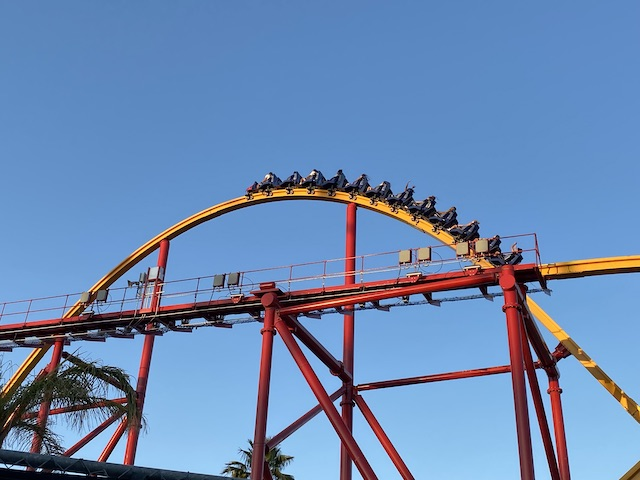
The airtime here feels like STRONG moments of airtime! Much better than Jersey Devil.
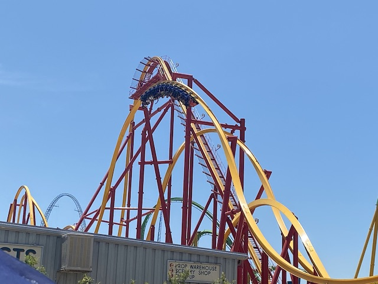
And more laterals. This just feels....whippier. You know that "riding a whip" description I wrote when I first rode Railblazer, the same applies here. =)
 Though yeah. I have to admit. For as much as I like it, it's still not as good as Railblazer, and my least favorite RMC in CA.
Though yeah. I have to admit. For as much as I like it, it's still not as good as Railblazer, and my least favorite RMC in CA.
Honestly, 3rd best ride here, just behind Twisted Collosus & X2. Very fast, forceful, whippy, smooth, and just a ton of fun.
 You guys are gonna enjoy the buffet of airtime in the bunny hops coming up soon. =)
You guys are gonna enjoy the buffet of airtime in the bunny hops coming up soon. =)
Oh look. Wonder Woman's opening has another positive side effect!
 That's right! Gotham City reopening means that I can get back onto Batman the Ride! SWEET!!!
That's right! Gotham City reopening means that I can get back onto Batman the Ride! SWEET!!!
You can tell that Wonder Woman's popularity is giving a lot of attention to Batman, cause it normally DOESN'T get lines like this except on the most crowded "STAY THE F*CK AWAY" days. And likewise, I would normally NEVER wait in this line for it. But....I haven't done this in a while, and can pass the time with a podcast.
It may be a clone, but don't let that distract you from the fact that this little ride packs a punch and really kicks ass! =)
Seriously. If this ride was never cloned and only built once, you'd see A LOT more enthusiasts raving about it.
Here's what's left of Tidal Wave.
I honestly forgot why I ate at the park on this visit. I know I really try to avoid it. But....I guess I did on this visit for some reason (Damn update being so late).
While this does look good, I just can't afford to buy an expensive park lemonade. Not in my budget now.
It may feel really out of place, but this still is a pretty good dark ride.
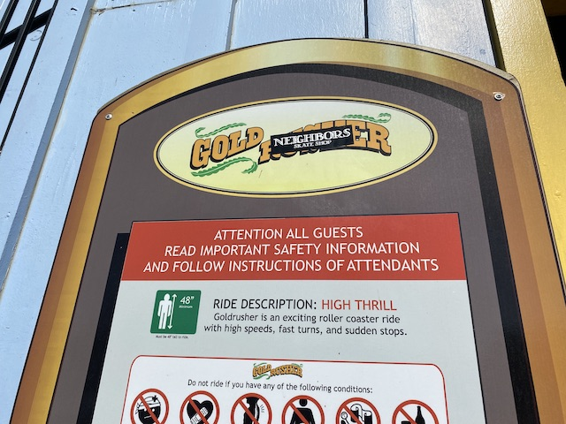
Next up, we're riding Gold Neighbors. Hmm. Not familiar with this ride. Wonder if they renamed something at the park.
 Another ride that Jason can ride.
Another ride that Jason can ride.
Hey! Anyone want a free hat?
Sure. Why not hit up Tatsu?
GAH!!! I've wanted the shot of Tatsu in the Pretzal Loop from Orient Express for so long. I finally got it, and it looks like sh*t! F*CK!!!
Oh, I guess it has another new name. Now, it's the Magic Mover.
ARE YOU F*CKING SERIOUS!!? IT'S THE MIDDLE OF SUMMER, AND ONE OF YOUR BEST AND BUSIEST COASTERS IS RUNNING WITH ONE TRAIN!!? NOT ACCEPTABLE SFMM!!! (At least you're warning guests up front at least. Cold comfort)
All right. Visits #4 & 5. These two visits were so close together that they blend together for me. Especially since both were me doing whirlwind tours of the park with people are from out of town and need to be caught up or haven't been before at all.
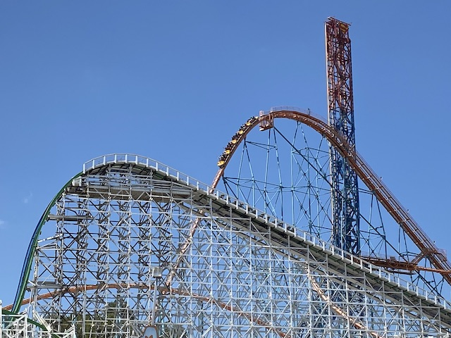
Yeah. Good to get some rides on Goliath in.
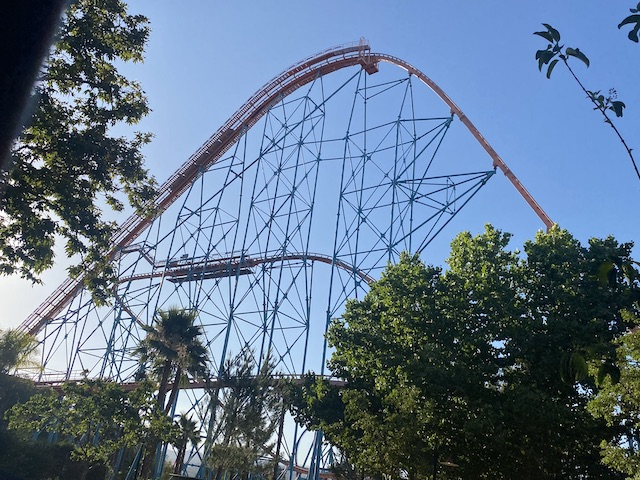
I know people generally frown on this ride since....it's a Positive G monster and hyper coasters are supposed to be airtime machines. But....this is still a really fun ride. Just a ride I can relax on (the joys of having this at my home park and having ridden it at least 1000 times lol).
 Of course, we had to get more rides on the new ride. And no surprise, but both guests loved it as well.
Of course, we had to get more rides on the new ride. And no surprise, but both guests loved it as well.
This always helps. Thanks for keeping the Single Riders Lines SFMM!
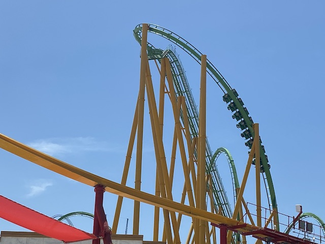
Still unquestionably the best stand up coaster.
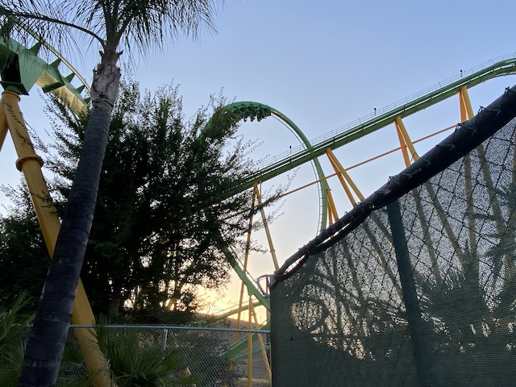
Super happy that they built Pipeline @ Sea World Orlando as we really need more Stand Up Coasters out there.
So, I know this isn't the first time I've complained about this. But occasionally, including today, the water at SFMM was just VILE!!! It felt unsafe to drink and my tastebuds were SCREAMING "POISON!!!". I honestly wanted to test the water and see if there's some chemicals in the Valencia Water cause Flint, MI is not the only place in America with unsafe drinking water. But I DON'T HAVE TIME TO TEST THE WATER!! And even if I did, and it was bad, I don't think I could lobby the city to fix it (or know how to fo so). Especially since this only happens from time to time. But one of these days, if its still having this problem, I'll check!
 Yeah. This is nice to ride on a hot day.
Yeah. This is nice to ride on a hot day.
 SPLOOSH!!!
SPLOOSH!!!
Hey Australians! Look what I can ride here!? =P
Hmm. What's that I see in the dirt?
GAH!!! Our row on Ninja is closed! GOD DAMN IT!!!
 Dear SFMM, please continue to maintain this ride. It's a real rarity and it's very valuable to have here (Same goes for Viper and Superman: Escape from Krypton).
Dear SFMM, please continue to maintain this ride. It's a real rarity and it's very valuable to have here (Same goes for Viper and Superman: Escape from Krypton).
So....how are they gonna add Wonder Woman to their Greatest Coasters lineup? There's no mural for them to cover over. You think some ride is gonna get the axe, or will they just stop and exclude Wonder Woman due to the lack of space?
 A line for X2 this short in the summer? Even during the sweet spot, that's incredibly lucky.
A line for X2 this short in the summer? Even during the sweet spot, that's incredibly lucky.
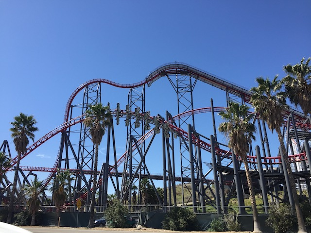
Yeah. You like that? Yep, there's no coasters like that on the East Coast. ;)
Of course, Viper has a short line. As usual.
 Bah! You people complaining about it being rough need to stop bitching!
Bah! You people complaining about it being rough need to stop bitching!
 Yeah. I had a fun these past few days. Looking foreward to many more fun visits to Six Flags Magic Mountain.
Yeah. I had a fun these past few days. Looking foreward to many more fun visits to Six Flags Magic Mountain.
Home
|